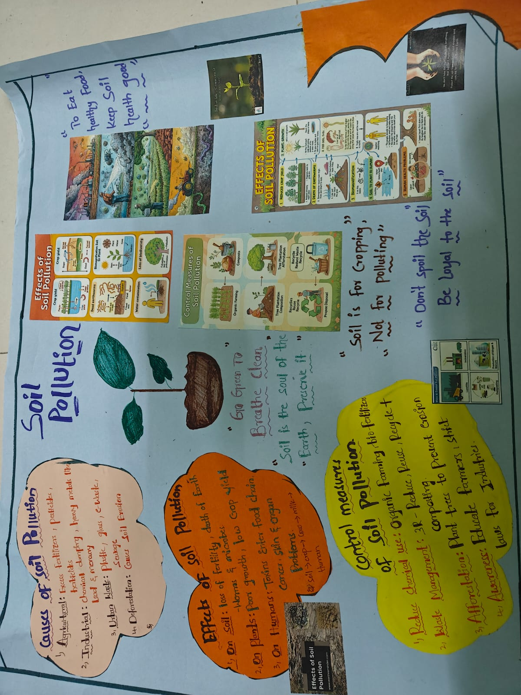
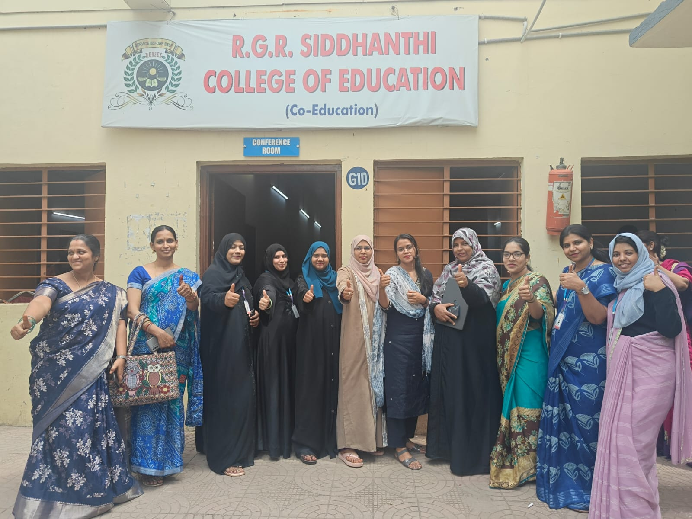
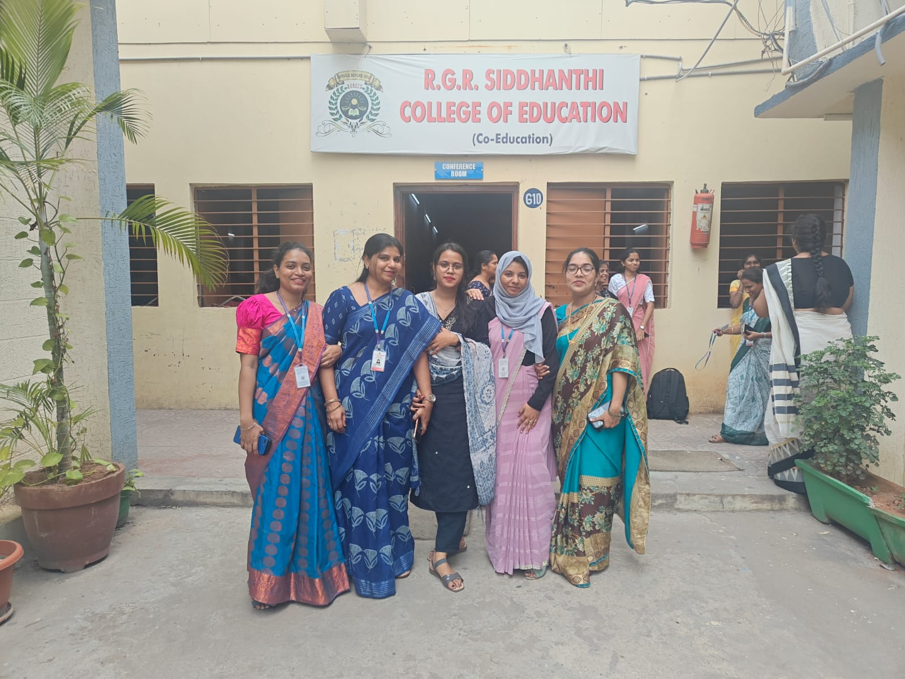
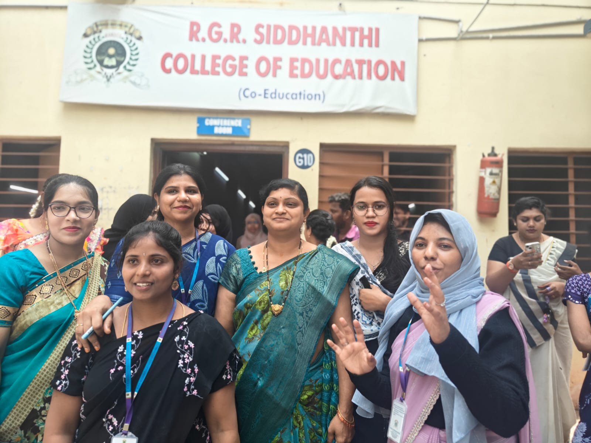

Semester IV
The final stretch. This semester was the culmination of two years of hard work, pulling together everything from classroom management to community health, and finally facing my practical exams.
Final Practical Examination
The final practical examination represented the absolute peak of the two-year B.Ed. journey. It was the ultimate test of everything we had practiced—bringing together rigorous lesson planning, board management, and the practical execution of teaching methods in a live classroom environment under the strict observation of an external examiner.
For my Hindi practical, I taught the poem "Aisa Pyara Desh Hai Mera" to the 8th-grade class. Preparing for this required meticulous attention to detail, from drafting the structural lesson plan to designing visual aids and charts that would capture the students' attention. Standing in front of the class, I focused on vocal modulation, interactive questioning, and proper chalkboard structuring to make the poem's core themes of unity and patriotism truly resonate.
Navigating the assessment while keeping the students actively engaged was a defining milestone. It shifted my perspective from being a student learning about education to a confident professional ready to manage a real classroom. Take a look through the slideshow below to see snapshots from the examination session:

Active teaching and board work during the exam

With the external examiner after the assessment


Environmental Education
We don't just teach subjects; we teach students how to be responsible citizens. Our Environmental Education curriculum focused heavily on making students aware of the world around them.
I put together a massive visual project on Soil Pollution. Instead of just lecturing, the poster allowed the class to visually connect the causes (like industrial dumping and agricultural chemicals) to the real-world effects on our food chain. We ended the lesson by discussing practical solutions like the 3Rs (Reduce, Reuse, Recycle) and afforestation.
Public Health Visit
A big part of Semester 4 was realizing that teaching extends beyond the school walls. To understand community welfare, our R.G.R. Siddhanthi College cohort visited the Community Health Centre (CHC) in Malkajgiri.
It was a real eye-opener. We observed how public health administration actually operates, looking at everything from inpatient nutritional charts to how patient records are maintained. It gave me a much better understanding of the health backgrounds and social safety nets that support our students' families.

Inpatient Nutrition Study
Reviewing the public health diet schedules provided to hospital patients.

Healthcare Administration
Understanding the flow and organization of different public health departments.

Clinical Observations
Observing patient-care environments and direct healthcare interactions.

Medical Record Protocols
Learning about proper record-keeping procedures from healthcare staff.

Public Health Outreach
Discussing community welfare and health management practices with nurses.

Community Engagement
Our R.G.R. Siddhanthi College cohort outside the UDID Evaluation Center.
Farewell to R.G.R. Siddhanthi
You can't get through two years of intense lesson planning, practical exams, and field visits without an amazing support system. Standing outside R.G.R. Siddhanthi College of Education with my cohort on our last few days brought up a lot of emotions.
We started as nervous students and left as confident educators. The friendships, shared struggles, and late-night study sessions with my peers are memories I will carry with me throughout my entire teaching career.



Semester IV Reflection
Finishing Semester IV felt surreal. My final practical examination was proof that I had actually absorbed everything I learned over the last two years. I went from being nervous to even write on a blackboard in Semester 1, to confidently managing an entire classroom while being graded.
But more than just passing an exam, the projects we did this semester—like the environmental posters and the hospital visit—made me realize the true scope of this job. A teacher isn't just an instructor; we are facilitators, guides, and active members of the community.
I am leaving the B.Ed. program completely confident in my ability to plan lessons, create engaging materials, and connect with my students.
The Complete Academic Journey
Four semesters of learning, teaching practice, field experiences, creative work, and reflection have shaped my journey as a student teacher.